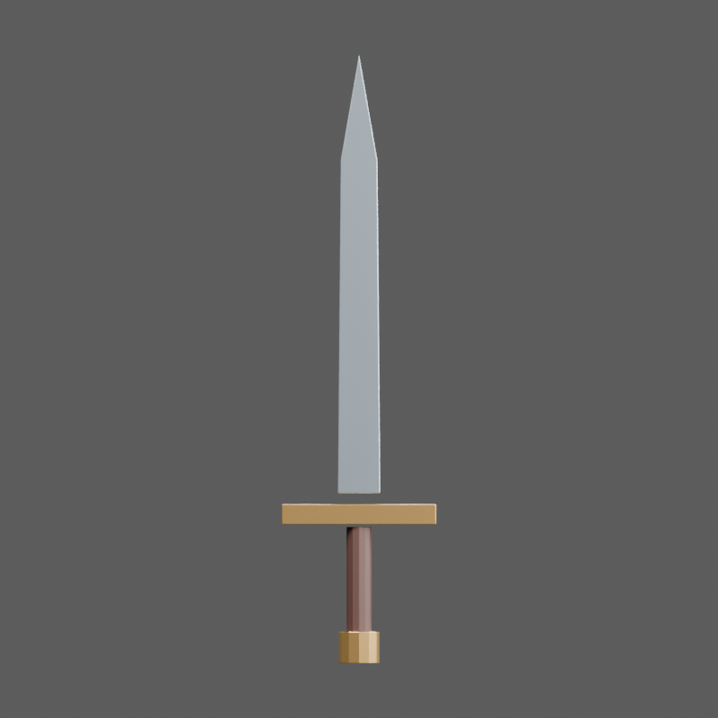
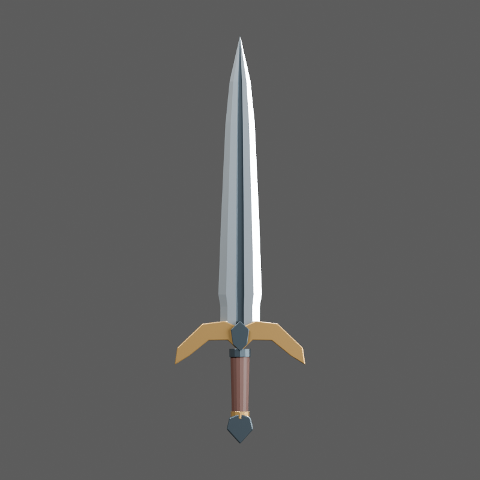
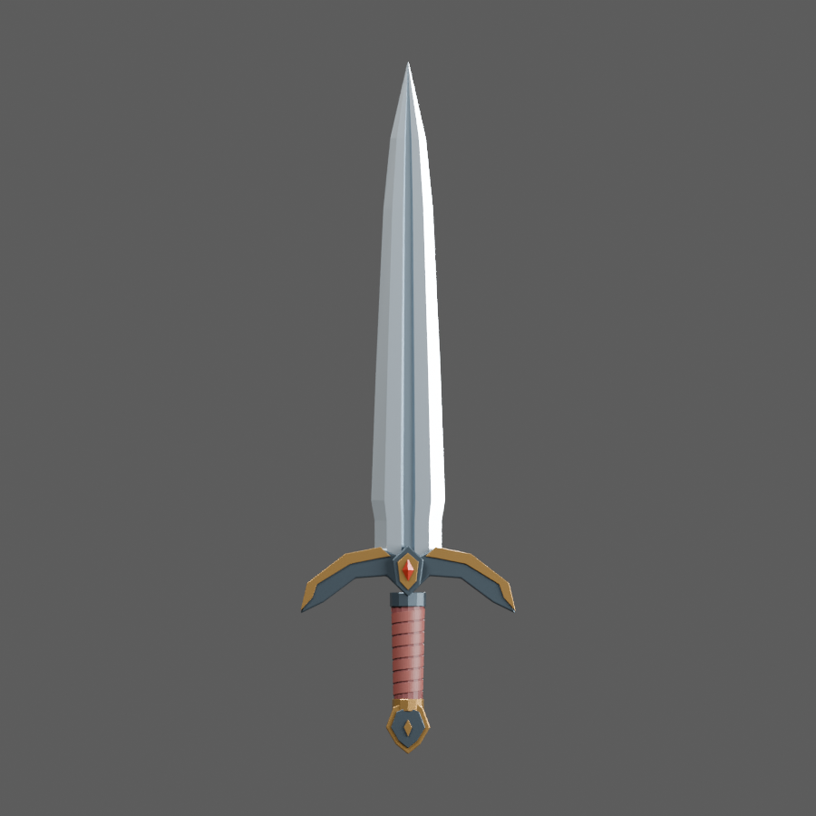
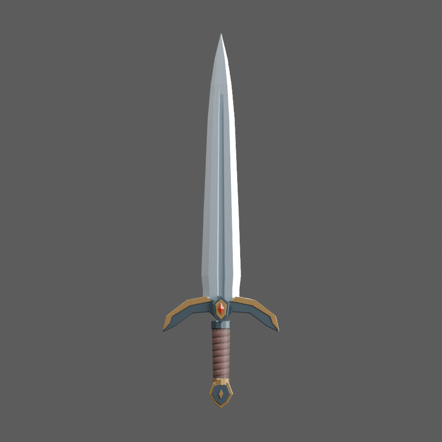
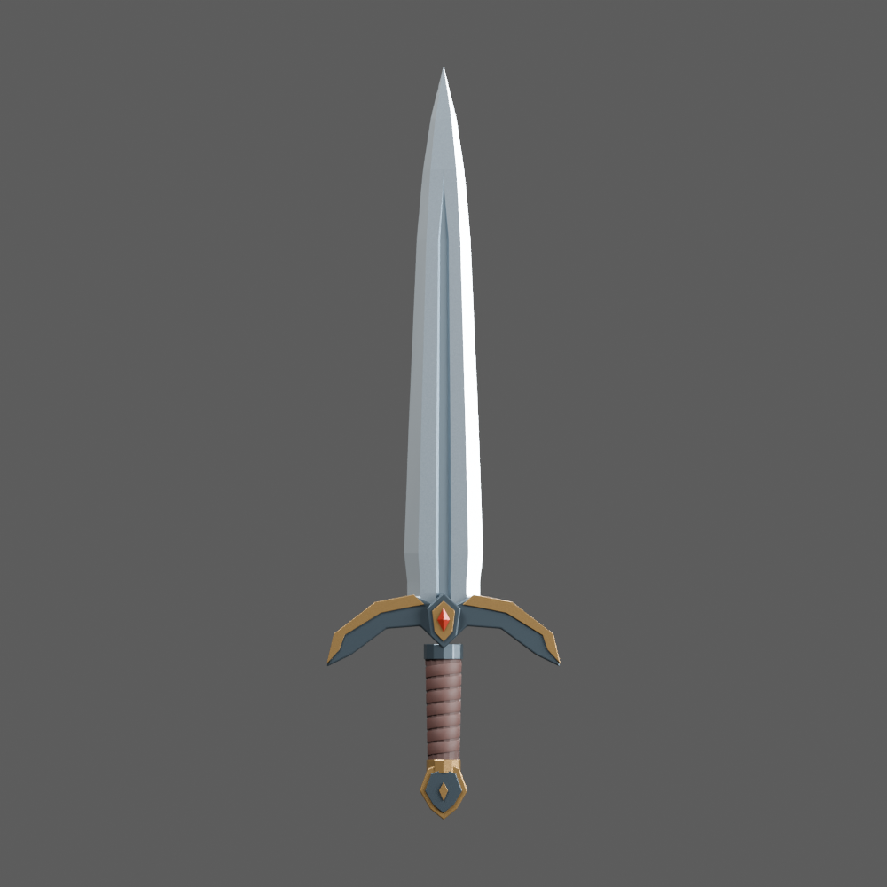
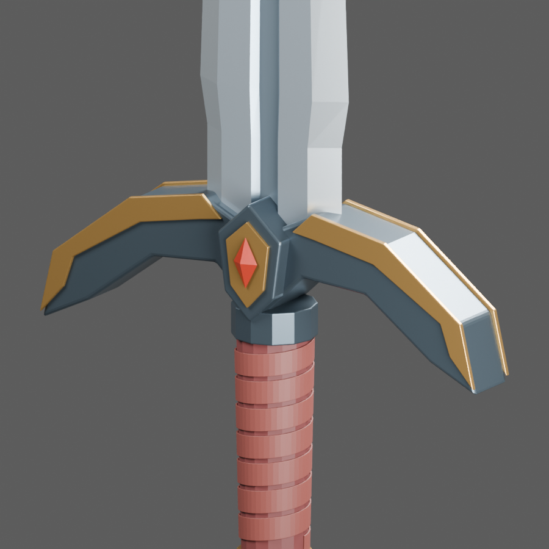
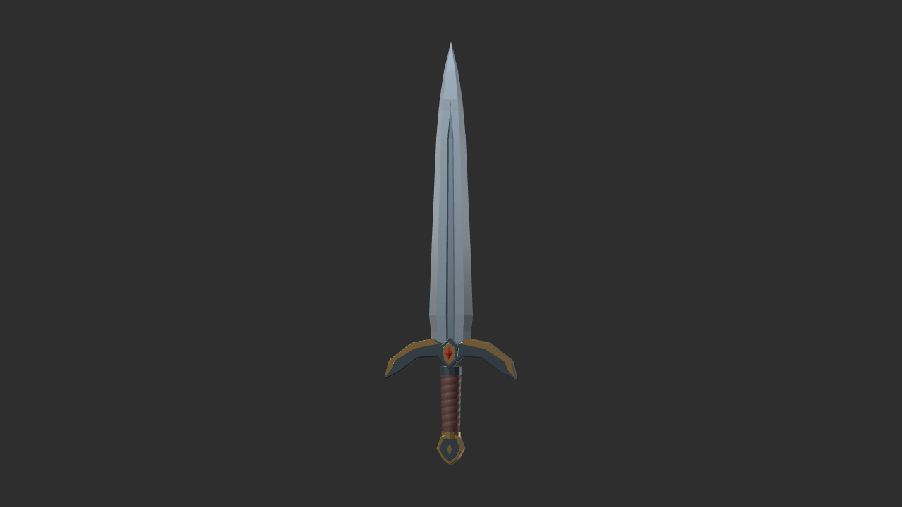
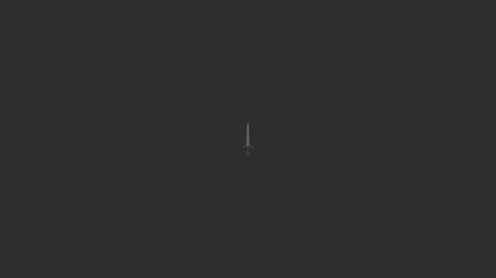

Oathkeeper sword
One asset, five reviewed stages. These are original Blender renders and actual Godot captures. Click a view for its full-size PNG. No generated illustration substitutes for the model.
Changes driven by rendered review

01 · RoughFloating blade joint, bar guard, long cylindrical grip.

02 · StructureConnected blade, cutting bevels, swept guard, faceted pommel.

03 · CraftSteel/brass construction, wrapped grip, matching crests.

04 · FinishBetter leather and shading; review caught repeated metal stripes.

05 · FinalRemoved striping; tapered fuller termination; grip-centered origin.
Final hilt
 Final hilt close-up
Final hilt close-upDiagnostic close-up
This intermediate render exposed bright plastic-looking leather and harsh shading at the joins. Later stages address those weaknesses.

Stage 03 · hilt diagnostic
Actual Godot 4.7.2 export check
One imported mesh, eight material surfaces, 8,796 triangles. Lighting differs from the Blender studio. The 8 m view is an isolated perspective fixture, not an equipped-character gameplay screenshot.

Imported GLB · close view

8 m · 60° FOV · 1280 × 720 original frame
MCP/GLB verification · Blender topology report · Godot import report